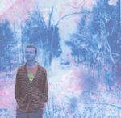

| Artist: | Vutdevuk |
| Title: | Ice Age |
| Label: | Virus Records |
| Length(s): | 59 minutes |
| Year(s) of release: | 2001 |
| Month of review: | [01/2004] |
| 1) | A Castle Made Of Ice | 10.09 |
| 2) | Lost Night | 6.26 |
| 3) | Haunting | 5.50 |
| 4) | Softporn | 5.35 |
| 5) | Divided | 9.06 |
| 6) | Ice Age | 8.53 |
| 7) | Snowblind | 7.37 |
| 8) | Forbidden | 6.07 |
We move right into the drum monotony of Lost Night. Again we have the tinny drum sound, very flat. When the long guitar lines start the song does show some promise, the lines are quite telling. The vocals are somewhat jazzy, in the way of Steely Dan, the piano plays quite an important role here and add to the jazziness. The chorus is more involved with Matt Bianco type backing vocals. Notwithstanding the references, the music is in fact quite difficult to compare, the sound is distinctive. They do showever that Vutdevuk also has elements of pop although the previous track had some parts that absolutely denied this.
Haunting is a somber vocal track, dreary even. A band like Pineapple Thief or Vulgar Unicorn can be linked up here, although the Britishness of these bands is strongly apparent. We have no such thing here. The vocal melodies do have something of these bands. A pop sensibility but a less than accessible recording. The vocal melody is in fact very good here, not in an unobtrusive way. The guitar playing is ethereal.
Bouncy bass and a soft rhythm box can be found on Softporn, with whisps and curls of synth. The vocals sound much more mature on this one, intimate and whispered. The guitar lines are noisy and somewhat cosmic. Halfway, the pop vocals of the previous songs come in, shifting into a higher register. The guitars continue to scream, the pace has gone up, the vocals are strong.
Divided means back to the longer tracks. It opens with repetitve piano patterns, the vocals are more in the line of Alan Parsons Project or maybe Flash And The Pan (in their down songs). A question and answer game results in a rather mellow chorus. After some alternation of this kind we move into a more bombastic passage (this tends to happen in the longer tracks) with lots of synths and a guitar passing by. The song leaves us slowly. A bit little content for a track of nine minutes, it seems to me. And since the chorus sounds a bit boring...
The title track is next up. The first minutes are filled with piano playing, quite entertaining piano playing in fact (albeit most likely on keyboards). The coldness radiates from the guitar lines. Snowblind recalls an earlier track, Divided, but it is more harrowing and louder. Sounds very sharp in fact. Plodding through the snow accompanied by strong doses of mellotron, we continue until we arrive back at a friendlier place laced with piano. In structure it does not differ much from Divided as well, and one may wonder as to why it is here.
Forbidden is a modern pop song, but the vocal line is not so strong. The drums sound automatic and flat again. Some parts light up the song, but this is certainly not the best song so far.
If you are curious about the lyrics: the song is a concept album about "being emotionally and physically frozen".